The Standard Deviation is Standard
Responses, Four People (0, 0, 1, 1)
With replacement
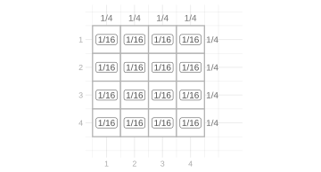
Without replacement

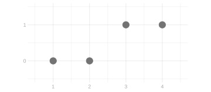

Responses, Four People (0, 0, 0, 1)
With replacement

Without replacement
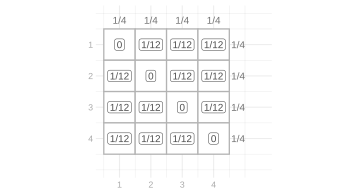
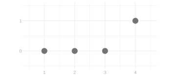
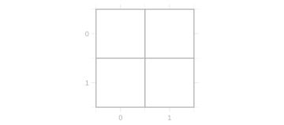
Markov’s Inequality

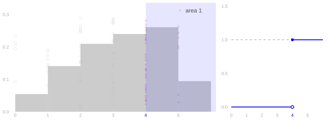
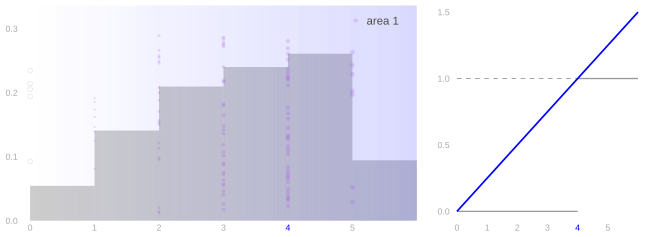
- For X\ge0 and t>0, how large can P(X\ge t) be? \begin{aligned} P(X\ge t) &\class{fragment=0}{\overset{\texttip{\small{\text{?}}}{probability as expectation}}{=}\mathop{\mathrm{E}}[1_{\ge t}(X)]}\\ &\class{fragment=1}{\overset{\texttip{\small{\text{?}}}{the ramp bounds the indicator}}{\le}\mathop{\mathrm{E}}\sb*{\frac Xt}}\\ &\class{fragment=2}{\overset{\texttip{\small{\text{?}}}{linearity}}{=}\frac{\mathop{\mathrm{E}}[X]}t.} \end{aligned}
Chebyshev’s Inequality: Visual Solution


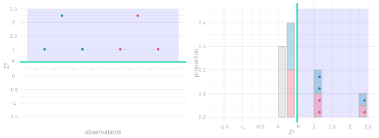
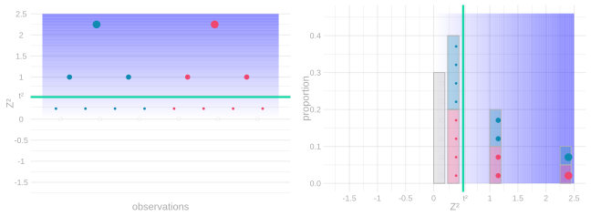
- Write Z=X-\mathop{\mathrm{E}}[X].
- For t>0, \begin{aligned} P(Z\le-t\text{ or }Z\ge t) &\class{fragment=0}{=P(|Z|\ge t)}\\ &\class{fragment=1}{=P(Z^2\ge t^2)}\\ &\class{fragment=2}{=\mathop{\mathrm{E}}[1_{\ge t^2}(Z^2)]}\\ &\class{fragment=3}{\le\mathop{\mathrm{E}}\sb*{\frac{Z^2}{t^2}}}\\ &\class{fragment=4}{=\frac{\mathop{\mathrm{E}}[Z^2]}{t^2}=\frac{\mathop{\mathrm{\mathop{\mathrm{V}}}}[X]}{t^2}.} \end{aligned}
The Standard Deviation is Standard
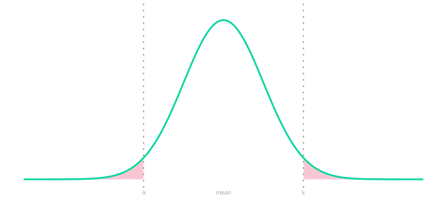
- Write \sigma=\mathop{\mathrm{sd}}(X).
- If \sigma>0, then for every k>0, Chebyshev’s inequality says P(|X-\mathop{\mathrm{E}}X|\ge k\sigma)\le \frac1{k^2}.
- If \sigma=0, then X=\mathop{\mathrm{E}}X with probability one, so there is no positive departure from the mean to bound.
- The statement contains no density, no named distribution, and no approximation.
- Two standard deviations means a tail probability no larger than 1/4 for every distribution with finite variance.
- Four standard deviations means no larger than 1/16.
- The exact tail probability changes from one distribution to another; the guarantee does not.

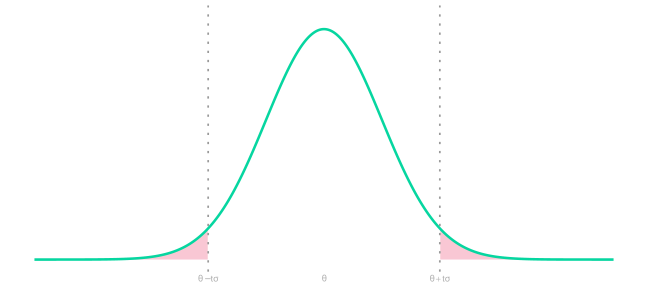
Bounding the Error


- If \sigma=0, unbiasedness implies \hat\theta=\theta with probability one.